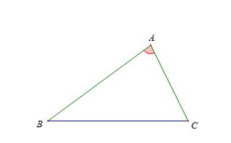
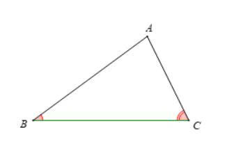

• Trong tam giác ABC, góc BAC (hay góc A) được gọi là góc xen giữa của hai cạnh AB và AC.
• Nếu hai cạnh và góc xen giữa của tam giác này bằng hai cạnh và góc xen giữa của tam giác kia thì hai tam giác đó bằng nhau.

• Trong tam giác ABC, hai góc ABC và ACB (hay góc B và góc C) được gọi là hai góc kề cạnh BC của tam giác ABC.
• Nếu một cạnh và hai góc kề của tam giác này bằng một cạnh và hai góc kề của tam giác kia thì hai tam giác đó bằng nhau.